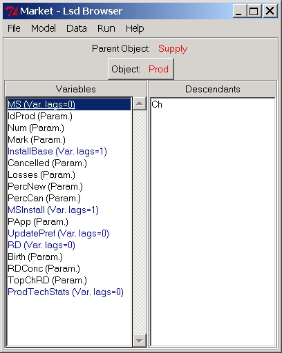
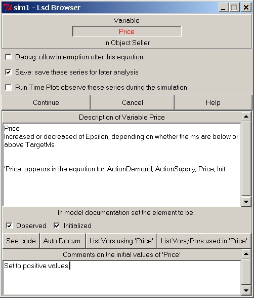
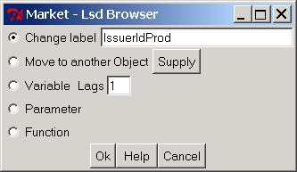

HyperManual
Lsd
Windows Lsd FAQ's
Lsd Main Browser
The main browser is used at the same time for two purposes: showing
the content of one Object type (referred to "the Object pointed by the
Browser") and serving as control center for all activities of Lsd
before
and after a simulation run. The Object shown can be edited (e.g. add
new
Variable, change its number if instances, set its initial data). The
uppermost
part of the main Browser is made of a menu bar that allow to make the
actions,
on either the whole model (e.g. run the simulation) or change the
Object
pointed by the browser.

Menus of the Browser:
Menu File
Menu Model
Menu Data
Menu Run
Menu Help
Browser commands:
(Main Browser)
"Object:"
The red label indicates the name of the Object pointed to by the
Browser.
Any operation specific to an Object will concern all the instances in
the
model of this type of Object.
Clicking on the red label is a shortcut to entry "Change
Object Name" in menu Model.
(Main Browser)
"Parent Object:"
The red label reports the name of the Object from which the currently
shown Object descends. The label can be clicked to move the Browser to
point to that Object, that is "up" in the hierarchy.
(Main Browser)Listbox
"Variables"
The listbox Variable contains all the Variables and the
Parameters
in the Object pointed by the Browser. The
order
in which the Variables and Parameters are listed depends on the order
in
which they have been inserted in the model, and it has no relevance for
the simulation actual order of computation during a time step (for this
see the Lsd Simulation Manager help
page).
After the label of the Variables and Parameters there is a code between
parenthesis:
- (P) means that the label corresponds to a Parameter;
- (n), where n is a non-negative integer, means that the label
corresponds
to a Variable. If n equals zero, it means that the Variable is never
used
in the model with lagged values. Positive n's mean that the
corresponding
Variable is used with a maximum lag equal to n.
Double-clicking on one element in the list causes a window like the
following
to appear:

The top part of the window indicates the label of the Variable or
Parameter
and the Object where it is contained. Double-click
on the name of the Variable
or Parameter to change it in another type of element (e.g. change the
label, or turn a variable in a parameter).
Below the title there are three options (two for Parameters):
- The field Debug
(only for
Variables)
checked on means that the computation of any instance of the Variable
causes
the debugger to stop the simulation and show the state of the model
(see Lsd
Debugger). The simulation will be interrupted immediately after the
computation of the Variable.
- The field Save
checked on
means
that the value of the Variable or Parameter must be saved in the result
file for post-simulation analysis.
- The field Run Time Plot
means
that the value of the Variable or Parameter must be plotted during the
simulation run on the Run Time Plot. Note
that
this does not cause the automatic saving of the values in the result
file
for post-simulation analysis.
The following buttons indicates to continue saving the options (Continue),
to continue without saving the modified options (Cancel) and the
help button for this page.
The parts below refer to the documentation of the Variable or
Parameter.
The "Description" is a text that the modeller can edit to indicate the
meaning of the item.
The following two options, Observe
and Initialize are used in the
documentation of the model. I checked, the model will include this item
in the list of elements containing relevant results and in the list of
initializations. These lists are issued from the menu
Run and placed in the header of the model report.
The four buttons below the Description (three for
Parameters) have the following effects:
- See code: show in a new window the actual code used to
compute the
Variable (not present for Parameters). See the manual page on the Lsd
equations
(C++ codying style or the new Lsd
Macro codying style)
- Auto Docum.: ask the system to provide automatic
documentation for
the Variable, which will replace any text possibly present. If the item
is a Variable the system scans the equation's code looking for a
commented
part in the beginning of the equation. If found, this comment is copied
in the Description. Moreover, both for Variables and for Parameters,
the
system also reports in which other equations the item is used.
- Vars using 'XXX': clicking this button creates a list of
Variables
whose equation makes use the item XXX
- Vars./Pars. used in 'XXX': clicking on this item creates
a
new window
with the list of items used in the equation for XXX.
The last part of the window contains place to store comments on the
initialization
of the item (of course, it is present only for items with initial
values:
Parameters and lagged Variables). This comment is automatically filled
when the user makes use of the Set All
function in the Initial Values window.
The description part and the comments on the initial values are used
in the model report in the cell concerning the item.
(Element Options)Change
Labels, lags and nature of an element
WARNING:
Changing the nature of an element or its location in the objects'
structure can severely compromise the model. Use this option only to
fix errors.
After having inserted a Variable or a Parameter it is
possible to
change
the nature of the element by changing its label, transforming a
Parameter
in a Variable, a Variable in a Parameter, moving it to another Object
or changing the number of lags
for a variable. Generally, these operations are required only in order
to fix spelling errors. If the model runs, the only reason for such a
change
is when the equations are changed, for example when you want to
transform
a Parameter in a Variable.
To change the nature of an element you need to:
- use the Browser to show the object
containing
the element you want to change;
- Double-click on the element entry in the list of Variables to show
the options for the element;
- Use the following window to edit the element as required.

The available operations are the follwing:
- Change label: edit the
label of the element. To delete the element altogether assign an empty
label, that is, delete all character in this box
- Move to another object:
remove the element from the current object to be placed in another one.
Click on the button showing the original Object containing the element,
and a list of objects in the model will appear.
- Variable: turns the
element in a variable. Use this option to modify the number of lags
defined for the variable, too.
- Parameter: turn the
element in a parameter.
- Funtion: turn the element
in a function.
(Main
Browser)Listbox
"Descendants"
Listbox containing the list of descendants from the Object shown in
the Browser. The names of the descendants can be double-clicked and the
Browser will move to show that descendant. A model in Lsd is composed
by
a hierarchical structure of Objects: the whole model has a unique root,
whose label is Root. Any Object can have any number of descendants,
both
intended in terms of different types of descendants and different
numbers
of instances for each Object type. The main Browser considers only
Object
types, without specifying the actual number of instances of each type.
Therefore, browsing the model using the main Browser can be done by
clicking
on the descendants' names to go down the hierarchy and clicking on the
label of the parent Object to go up the hierarchy.